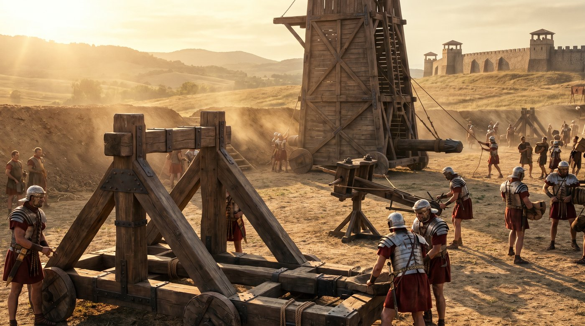
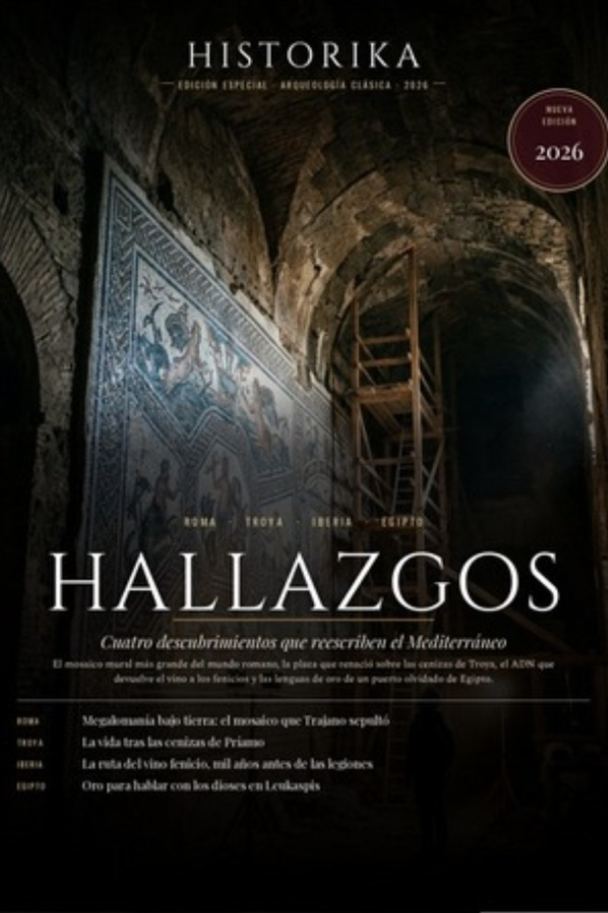
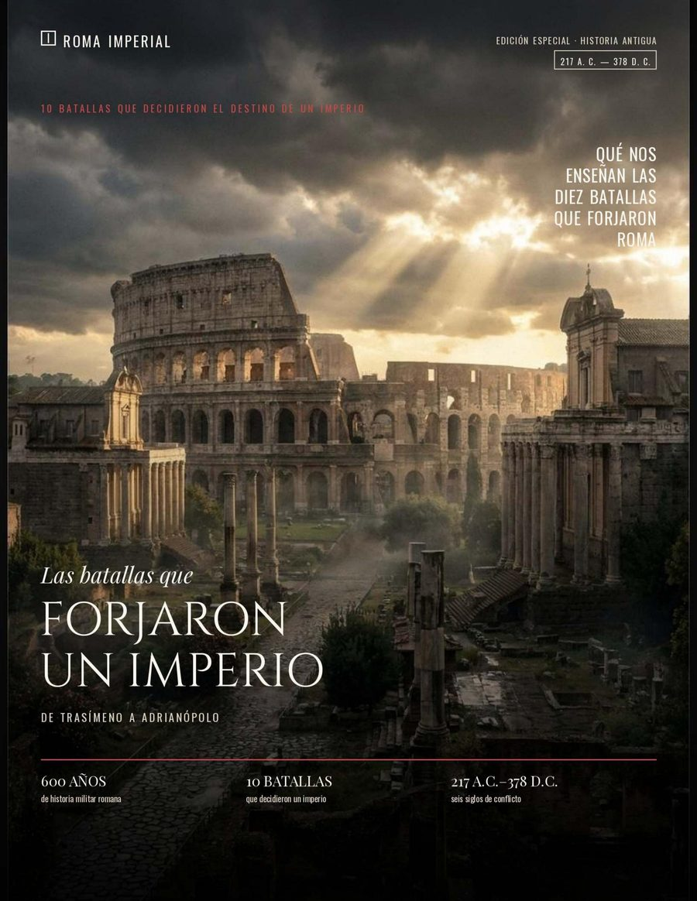

TÁCTICA MILITAR · GRECIA
TÁCTICA MILITAR · GRECIALa Falange Macedonia: El Arma que Conquistó el Mundo
La sarissa de seis metros redefinió la guerra antigua. El arma que permitió a Alejandro conquistar el mundo conocido en doce años.
Leer artículo →
TÁCTICA MILITAR · GRECIALa sarissa de seis metros redefinió la guerra antigua. El arma que permitió a Alejandro conquistar el mundo conocido en doce años.
 PERSIA · ALEJANDRO MAGNO
PERSIA · ALEJANDRO MAGNOGaugamela, 331 aC. Dos mundos chocan. El Imperio que tardó dos siglos en construirse desapareció en una tarde de octubre.
 ROMA · EJÉRCITO PROFESIONAL
ROMA · EJÉRCITO PROFESIONALCinco mil quinientos hombres, diez cohortes, una voluntad. La máquina militar más perfecta que el mundo antiguo conoció jamás.
 ROMA · CATÁSTROFE · 79 dC
ROMA · CATÁSTROFE · 79 dCEl 24 de agosto del 79 dC el Vesubio despertó. En doce horas, una ciudad de 20,000 almas quedó congelada para siempre bajo cuatro metros de ceniza.
 ROMA · ARTE · VIDA COTIDIANA
ROMA · ARTE · VIDA COTIDIANALos frescos, el grafiti, el pan carbonizado. Pompeya no es solo una tragedia — es el retrato más vivo y completo de cómo vivían los romanos.
 ROMA · GERMANIA · 9 dC
ROMA · GERMANIA · 9 dCArminius engañó a Roma. Tres legiones entraron al bosque en septiembre del año 9 dC. Ningún soldado volvió. Roma nunca cruzó el Rin.

ROMA · INGENIERÍA DE GUERRAEl ariete, el onagro, la ballista, la torre de asedio. Cuando Roma decidía que un muro debía caer, caía. Era solo una cuestión de ingeniería.
"Roma no fue construida en un día. Fue construida con la sangre, la disciplina y el genio de generaciones de hombres que creyeron en algo más grande que ellos mismos."
Revistas ilustradas y libros de historia antigua, con rigor histórico y diseño editorial. Descarga inmediata y lectura en cualquier dispositivo.
Reportajes ilustrados, mapas y cronologías sobre las civilizaciones que forjaron el mundo. Hójeala como una revista de papel, sin registro.

Nueva ediciónRoma, Troya, Iberia y Egipto: los cuatro descubrimientos que este año están reescribiendo la historia del Mediterráneo antiguo.

Edición especialDe Trasímeno a Adrianópolis: 600 años de historia militar romana en una edición especial ilustrada.
 Libro
Libro
Arminius, Varo y los tres días que destrozaron tres legiones romanas y cambiaron para siempre el mapa de Europa.
Descarga inmediata vía Gumroad · Pago seguro · Léelo en cualquier dispositivo
Tres episodios que narran la batalla que destruyó el Imperio Persa en octubre del 331 a.C. Escucha la historia con detalle académico y narración cinematográfica.

La historia del Imperio Aqueménida, su apogeo bajo Darío I y Jerjes, y el ascenso de Alejandro Magno como el mayor desafío que Persia jamás enfrentó.

Las batallas del Gránico e Issos, la caída de la familia real persa en manos de Alejandro, y los dos años que Darío III usó para preparar su venganza definitiva.

El día que cambió el mundo: 1 de octubre del 331 a.C. El análisis táctico de la batalla, la huida de Darío y el colapso definitivo del Imperio Persa.
Del Gránico a Persépolis: la campaña que en once años destruyó el mayor imperio del mundo antiguo.
El primer choque de Alejandro contra Persia en las orillas del río Gránico. Una victoria relámpago que abrió las puertas de Asia.
Leer artículo →El hombre que heredó el trono más poderoso del mundo y tuvo que enfrentarse al genio militar de Alejandro. Un rey más capaz de lo que la historia reconoce.
Leer artículo →Darío eligió un desfiladero para neutralizar la ventaja macedónica. Alejandro lo convirtió en su trampa. La familia real persa cayó cautiva.
Leer artículo →Siete meses de obstinación contra la ciudad más fortificada del Mediterráneo. Alejandro construyó una calzada desde tierra firme hasta una isla para tomarla.
Leer artículo →La batalla más analizada de la Antigüedad. Darío reunió el mayor ejército persa de la historia. Alejandro encontró el hueco en la línea y cargó directamente hacia el Rey.
Leer artículo →La capital ceremonial del Imperio Persa ardió en el 330 a.C. ¿Fue venganza calculada por la destrucción de Atenas o una noche de excesos? El debate sigue abierto.
Leer artículo →El sátrapa Ariobarzanes detuvo al ejército macedónico en un desfiladero de montaña durante semanas. La única victoria persa significativa tras Gaugamela.
Leer artículo →El Gran Rey fue asesinado por su propio sátrapa Beso cuando huía hacia el este. Alejandro cubrió el cadáver con su manto y lo enterró con honores reales.
Leer artículo →Diez mil guerreros de élite cuya cifra nunca cambiaba: si uno moría, otro ocupaba su lugar al instante. La guardia que protegió el trono persa durante dos siglos.
Leer artículo →El sistema de satrapías, las calzadas reales, el correo imperial y la tolerancia religiosa que Alejandro heredó e incorporó. Cómo Persia sobrevivió a su propia conquista.
Leer artículo →De la fundación mítica a la crisis del siglo III: la historia de la civilización que definió Occidente durante mil años.
Entre el mito de Rómulo y Remo y lo que la arqueología revela: cómo una aldea de pastores en el Lacio se convirtió en la ciudad que conquistó el mundo conocido.
Leer artículo →Tres guerras en un siglo que decidieron el destino del Mediterráneo. Aníbal cruzó los Alpes con elefantes. Roma sobrevivió Cannas y aprendió a ganar la guerra perdiendo las batallas.
Leer artículo →La decisión que convirtió a la República en Imperio. "Alea iacta est." Un cruce de río que cambió la historia occidental para siempre.
Leer artículo →Tres legiones aniquiladas en los bosques de Germania. La derrota que detuvo la expansión romana al este del Rin y definió los límites del Imperio para siempre.
Leer artículo →El sobrino nieto de César que transformó la República en Imperio sin llamarse nunca emperador. Dos siglos de paz relativa, prosperidad y construcción que definieron Roma.
Leer artículo →La guardia que protegía al emperador y a veces lo mataba para poner otro en su lugar. El precio político del poder concentrado en manos de unos pocos miles de soldados.
Leer artículo →La ingeniería que permitió albergar ochenta mil espectadores y el sistema económico, político y cultural detrás de los juegos que Roma usó para controlar a su población.
Leer artículo →En doce meses, cuatro hombres ocuparon el trono de Roma. La guerra civil que siguió a la muerte de Nerón demostró que el poder imperial era un negocio violento y provisional.
Leer artículo →La máquina militar más eficiente del mundo antiguo. Cómo se organizaban, entrenaban, marchaban y combatían los soldados que conquistaron y mantuvieron el Imperio Romano.
Leer artículo →Cincuenta años de anarquía, veintiséis emperadores, invasiones externas y colapso económico. Cómo el Imperio más sólido de la historia estuvo a punto de desintegrarse.
Leer artículo →El 24 de agosto del 79 dC el Vesubio despertó y congeló una ciudad entera bajo cenizas. Hoy sus calles, frescos y pan carbonizado nos regalan el retrato más vivo del mundo romano.
Antes de leer los datos, míralo con tus propios ojos. Este metraje real recorre las calles, atrios y frescos de Pompeya tal como se conservan hoy — la misma ciudad que el Vesubio congeló en el año 79 dC.
Cada piedra, cada columna, cada fresco que ves en este video es auténtico. Es el punto de partida perfecto para entender, a continuación, la ciencia exacta de lo que ocurrió aquel día.
En doce horas, una ciudad de 20,000 almas quedó congelada para siempre bajo cuatro metros de ceniza. La crónica hora a hora del día en que el Vesubio borró Pompeya del mapa.
Leer artículo →Los frescos, el grafiti, el pan carbonizado. Pompeya no es solo una tragedia — es el retrato más vivo y completo de cómo vivían los romanos.
Leer artículo →No fue magia ni castigo divino: fue física. Cómo funciona una erupción Pliniana, hora a hora, desde la columna de veinte kilómetros hasta los flujos piroclásticos.
Leer artículo →Cuatro ciudades sepultadas, miles de toneladas de roca por segundo, cientos de cuerpos documentados. Los datos duros detrás del desastre más estudiado de la Antigüedad.
Leer artículo →Un recorrido digital por el interior de una vivienda romana acomodada — atrios, frescos y mosaicos como los que decoraban las mejores casas de Pompeya.
Ver artículo relacionado →Así lucían los interiores de una casa romana en su época de esplendor — el mundo cotidiano que la erupción del año 79 congeló para siempre.
Ver artículo relacionado →Artículos, podcast, revista, libro y comunidad — el universo completo de Memorias del Pasado en un mismo lugar.
Legiones, emperadores, Pompeya y el ocaso del Imperio
La conquista que cambió para siempre el mundo antiguo
Recorrido por la ciudad que el Vesubio congeló en el tiempo
La arquitectura medieval que aprendió a construir con luz
Tres episodios narrados con rigor histórico y cinematográfico
Revistas y libros en PDF — desde gratis hasta $7.99
Únete al Círculo de Historiadores
"Veni, vidi, vici." — Llegué, vi, vencí.
Julio César, tras la batalla de Zela, 47 aC"No me importa cuántos sean. Preguntad si son dignos de enfrentarme en el campo de batalla."
Alejandro Magno, antes de Gaugamela"¡Quintilio Varo, devuélveme mis legiones!" Golpeándose la cabeza contra las paredes de su palacio.
Augusto, tras la derrota de Teutoburgo, 9 dC"Una nube de aspecto y tamaño inusuales surgió sobre el Vesubio. Su forma se asemejaba a la de un pino."
Plinio el Joven, Epistulae VI.16, 79 dC"El soldado que trabaja con la mente tanto como con las manos nunca será derrotado."
Vegecio, Epitoma Rei Militaris, s. IV dC"Los germanos no conocen la rendición. Solo conocen la victoria o la muerte en el campo."
Tácito, Germania, 98 dC"Ningún muro era suficiente. Donde Roma decidía que algo debía caer, caía. Era solo cuestión de tiempo e ingeniería."
Reflexión sobre la ingeniería militar romana"Los pompeyanos no sabían que serían inmortales. Solo vivían, amaban, escribían en las paredes y cocinaban el pan del día."
Reflexión arqueológica modernaUn grupo exclusivo donde compartimos análisis profundos, contenido anticipado, debates sobre el mundo antiguo y material que no publicamos en ningún otro lugar. Miles de apasionados por la historia ya son parte.
Unirme al Grupo Exclusivo →Memorias del Pasado es un proyecto independiente hecho con pasión por la historia. Si nuestros artículos, videos y el podcast te han hecho viajar dos mil años atrás, considera invitarnos un café — cada aporte nos ayuda a seguir investigando y produciendo contenido de calidad.
Donar con PayPal →